로테르담 루프탑 데이즈 — 도시의 옥상을 공공디자인으로 재해석하다 1편
로테르담 루프탑 데이즈: 도시의 옥상을 공공 디자인으로 재해석하다(1편)
로테르담 루프탑 데이즈(Rotterdamse Dakendagen)는 도시의 옥상 공간을 시민들에게 개방하고, 옥상의 활용 가치와 의의를 전달하는 독특한 축제다. 옥상을 활용하는 것은 공공 디자인의 관점에서 매우 중요한 의미를 지녀왔다. 도시의 옥상은 흔히 간과되거나 접근이 제한되는 공간이지만, 이처럼 축제를 통해 적극적으로 개방하고 다양한 프로그램을 운영함으로써 옥상은 단순한 건축물의 지붕을 넘어선다. 시민들은 옥상이 가진 잠재력을 직접 체험하며, 녹지 공간 조성, 에너지 생산, 빗물 관리, 주거 공간 확충 등 다각적인 활용 가능성을 인식하게 된다. 이러한 경험은 개인의 인식을 변화시키고, 나아가 도시 공간에 대한 새로운 관점과 참여를 유도한다. 결과적으로 옥상 개방은 공공 공간의 확장이라는 물리적 효과뿐만 아니라, 도시 환경 문제에 대한 시민 의식을 고취하고 지속 가능한 도시 발전을 위한 공공적 논의를 활성화하는 사회적 효과까지 창출하는 공공 디자인의 실천적 사례라 할 수 있다.
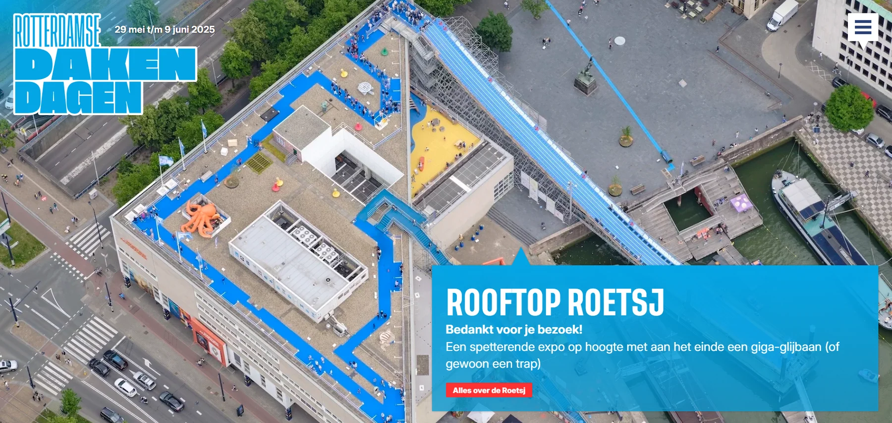
https://rotterdamsedakendagen.nl/
축제는 매년 로테르담의 옥상 공간을 활용해 도시의 새로운 가능성을 탐색하는 것을 목표로 한다. 매년 축제에는 수만 명의 방문객이 참여해 도시의 숨겨진 면모를 경험한다. 나는 지난 5월 31일과 6월 1일, 이틀동안 참여하며 로테르담의 옥상이 선사하는 다채로운 경험을 했다.
도시를 수확하고 맛보다: Thornico 빌딩 루프탑
이날 첫 번째로 방문한 곳은 Thornico 빌딩 옥상에서 진행된 ‘Pluk & Proef de Stad (도시를 수확하고 맛보다)’ 프로그램이다. 45미터 높이에 위치한 Thornico 빌딩의 옥상은 도시 빌딩 숲 한가운데서도 푸르름이 인상적인 공간이었다. 이 빌딩은 5000m2에 달하는 유럽 최대 규모의 녹색 외관으로도 알려져 있는데, 옥상 역시 다양한 식물들로 채워진 작은 정원처럼 꾸며져 있었다. 일반인이 ‘관계자 외 출입금지’ 푯말이 걸려있는 옥상에 접근하는 것은 거의 불가하기 때문에, 복잡하고 위험해보이는 구조물 사이를 지나 고층 건물 위에서 도시 풍경과 어우러진 정원을 만나는 경험은 신선했다.
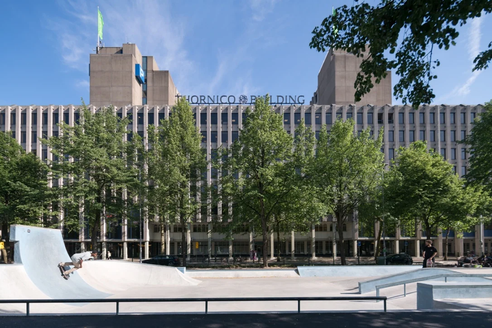
Thornico 빌딩(출처: https://thornicobuilding.com/)
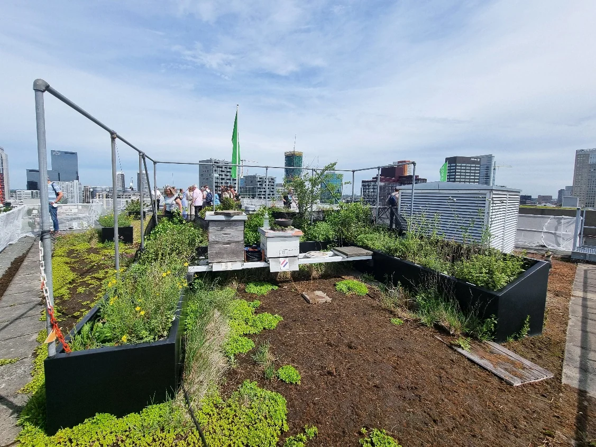
옥상 전경
이 프로그램은 Forêt Atelier와 Bloesembar의 설립자인 Maidie van den Bos가 진행했다. 그녀는 도시 환경 속에서 자라는 식물들에 대한 이야기를 들려주었다. 옥상에서 발견할 수 있는 식물들을 소개하며, 그것들이 가진 자연적인 특성과 활용 가능성에 대해 설명했다. 테이블 위에는 'Hedera', 'Taraxacum officinale(민들레)', 'Tragopogon pratensis', 'Senecio in aequo' 등 채집된 식물 샘플들이 페트리 접시에 담겨 전시되어 있었다. 참가자들은 이 식물들을 직접 관찰하며 도시의 옥상에서도 생각보다 많은 식물이 자라고 있음을 알 수 있었다.
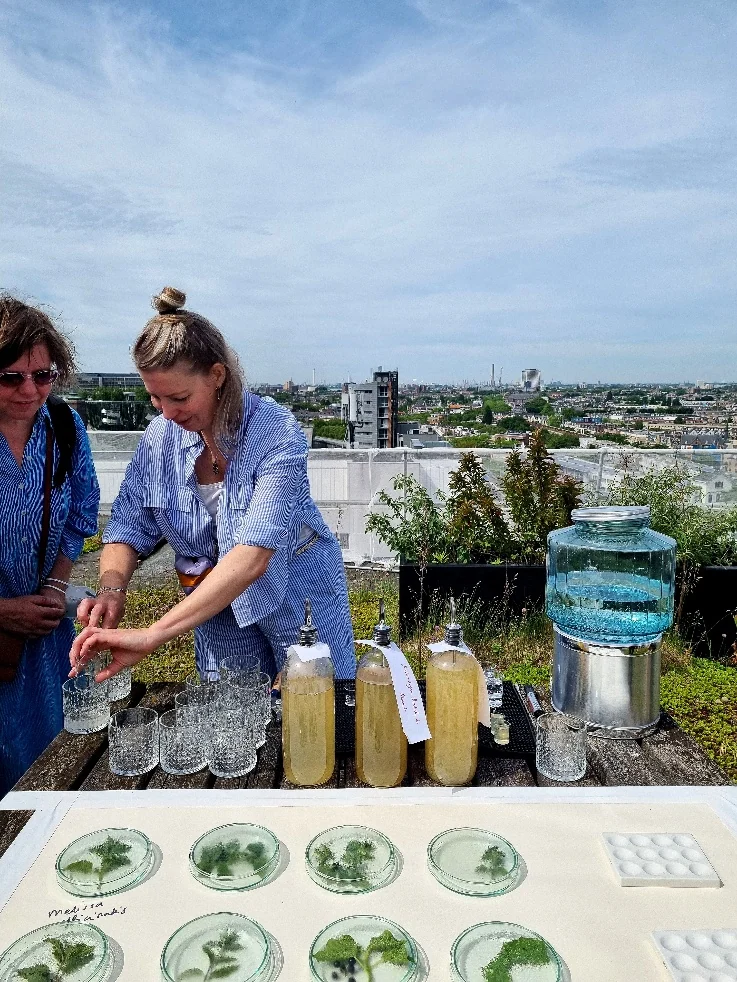
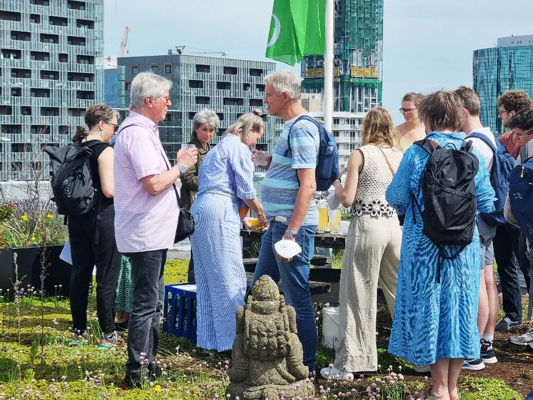
옥상 정원 한쪽에는 양봉장도 조성되어 있었다. 최근 전 세계적으로 꿀벌이 사라지는 현상이 심화되면서 생태계에 큰 영향을 미치고 있다. 이러한 문제에 대응하고 꿀벌을 보호하려는 노력의 일환으로 도심 옥상에 양봉장을 만든 것이다. 사진 속 검은색 울타리처럼 보이는 구조물 안에 벌통이 놓여 있었는데, 이는 꿀벌 보호를 위한 도시의 구체적인 노력을 보여주는 모습이었다.
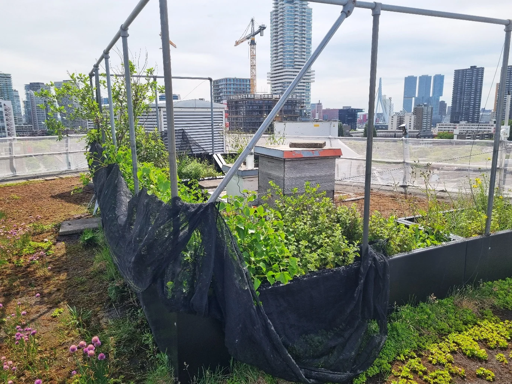
이어서 옥상에서 채취한 식물 재료를 활용해 만든 '루프탑 음료(dakdrankjes)'를 시음하는 시간이 있었다. Maidie는 각 음료에 사용된 식물과 그 맛의 특징을 설명해주었다. 참가자들은 음료를 맛보며 도심 속 자연의 맛을 경험했다. 'Pluk & Proef de Stad'는 도시의 숨겨진 푸른 공간을 탐색하고, 그곳에서 발견되는 식물들과 꿀벌 같은 생명체들을 새로운 시각으로 바라볼 수 있었던 기회였다.
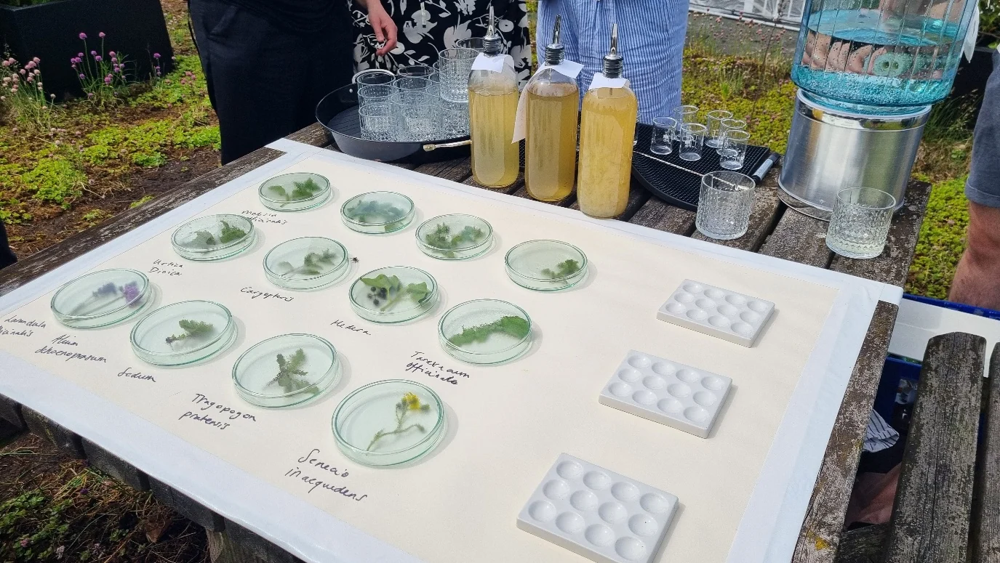
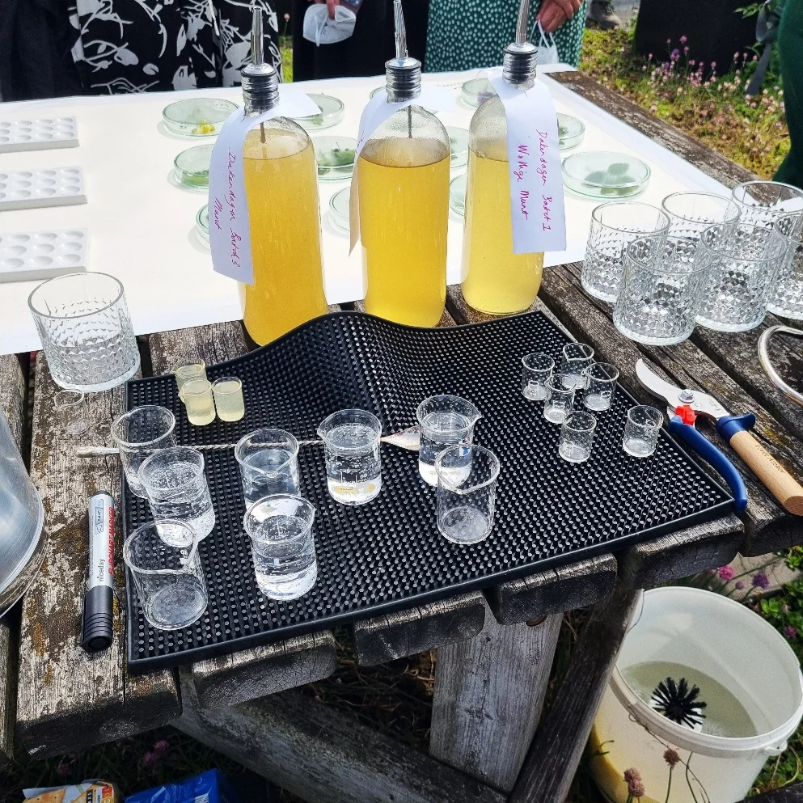
**
도시를 미끄러지다: 마리티엠 뮤지엄 루프탑 슬라이드
Thornico 빌딩 방문 후, 다음으로 마리티엠 뮤지엄(Maritiem Museum) 옥상으로 향했다. 이곳에서는 ‘Rooftop Roetsj (루프탑 슬라이드)’라는 프로그램이 진행 중이었다. 네덜란드 기준으로 제법 더운 날씨였음에도 불구하고, 수많은 인파가 이 행사의 메인 프로그램이라 할 수 있는 미끄럼틀을 체험하기 위해 길게 줄을 서 있었다.
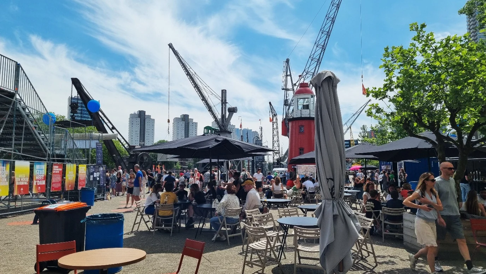
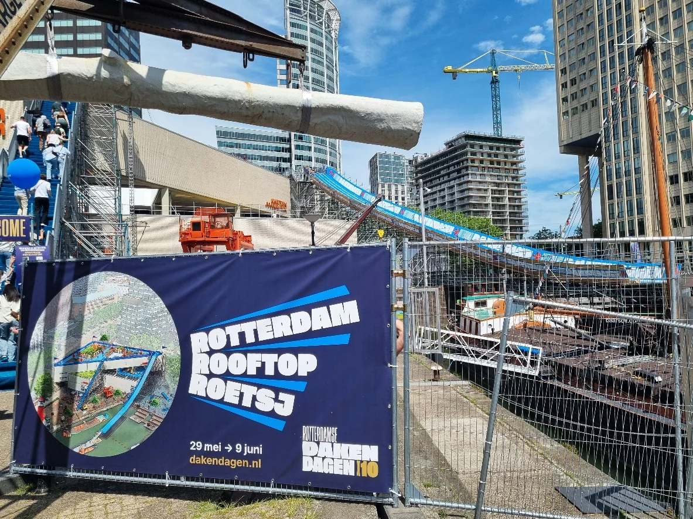
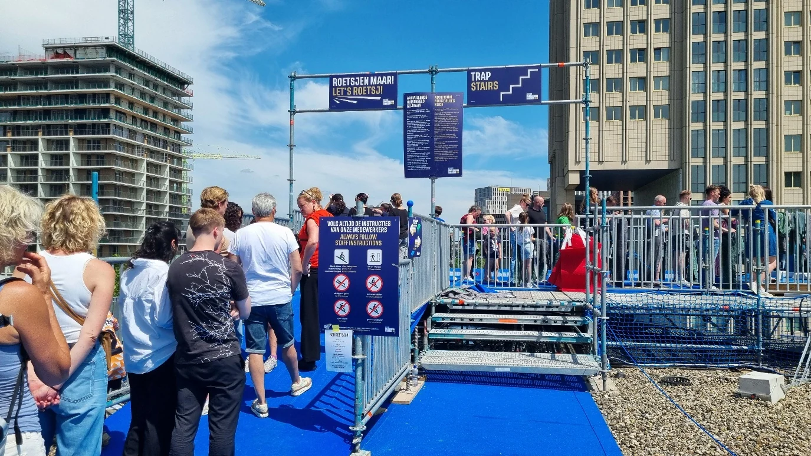
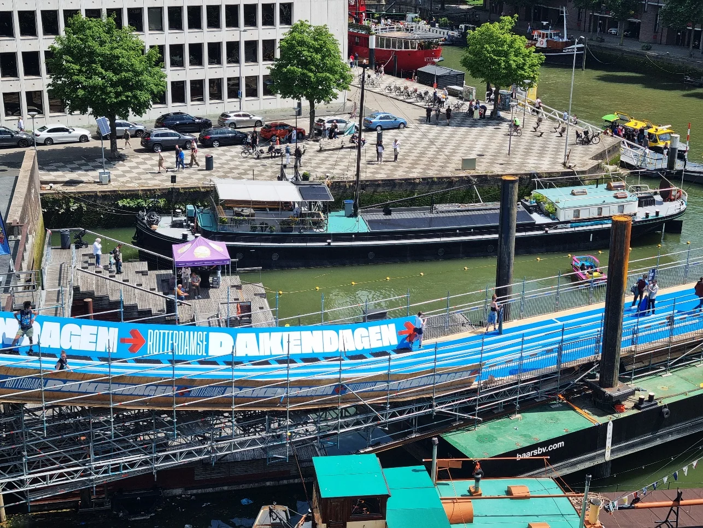
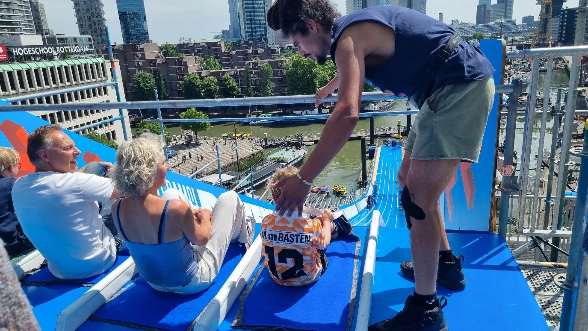
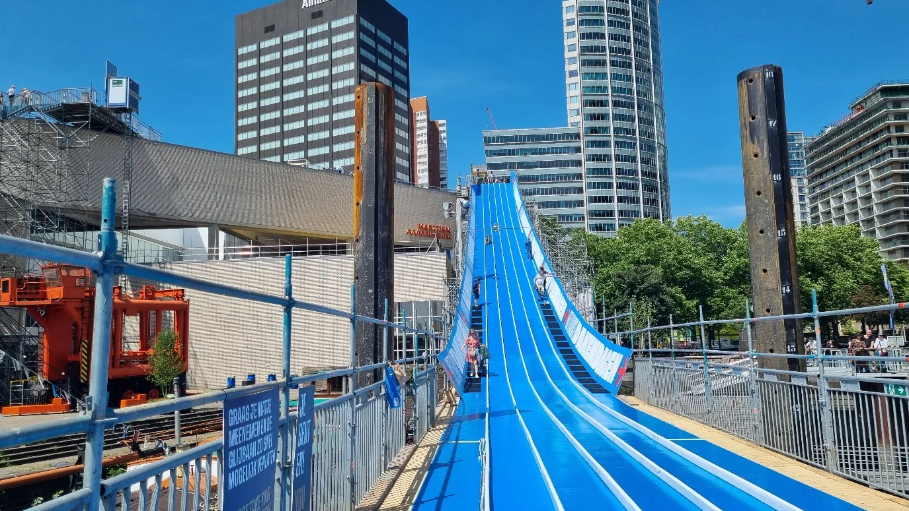
특히 인상 깊었던 점은 이 루프탑 슬라이드 체험 공간뿐만 아니라 옥상 전체가 하나의 의미 있는 전시장으로 꾸며져 있었다는 것이다. 슬라이드를 기다리는 동안 방문객들은 다양한 주제의 전시 판넬과 설치물들을 통해 로테르담의 역사, 도시 계획, 환경 문제, 그리고 미래 도시에 대한 비전을 자연스럽게 접할 수 있었다.
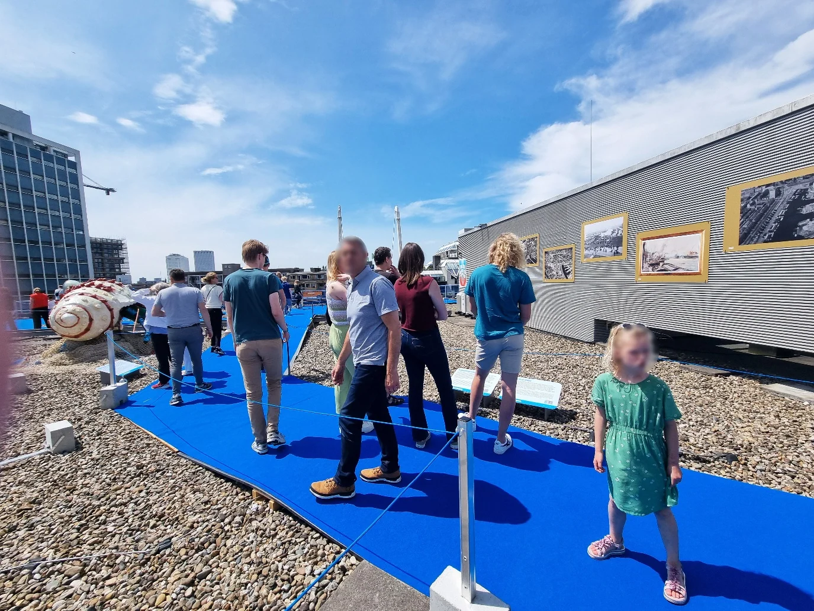
몇몇 주요 전시 내용을 살펴보면 다음과 같다:
A ROTTERDAM STREET ON A ROOFTOP There is a housing shortage in Rotterdam. What if we use rooftops to live on? This rooftop extension shows that with a typical block of houses from Rotterdam-West. The city and housing corporations will be adding extra floors to existing buildings more often in the future. Many buildings are strong enough for that. And then the new rooftop can also be used for fun things, like a green roof!
한글 번역: 로테르담은 주택난을 겪고 있다. 옥상을 주거 공간으로 활용한다면 어떨까? 이 옥상 증축은 로테르담 서부의 전형적인 갤러리 주택 블록을 보여준다. 시 정부와 주택 공사는 기존 건물에 추가 주거 층을 더 자주 올리는 방안을 함께 추진하고 있다. 많은 건물이 이를 지탱할 만큼 튼튼하기 때문이다. 그리고 이 새로운 옥상에서는 녹색 지붕과 같은 재미있는 일도 할 수 있다!
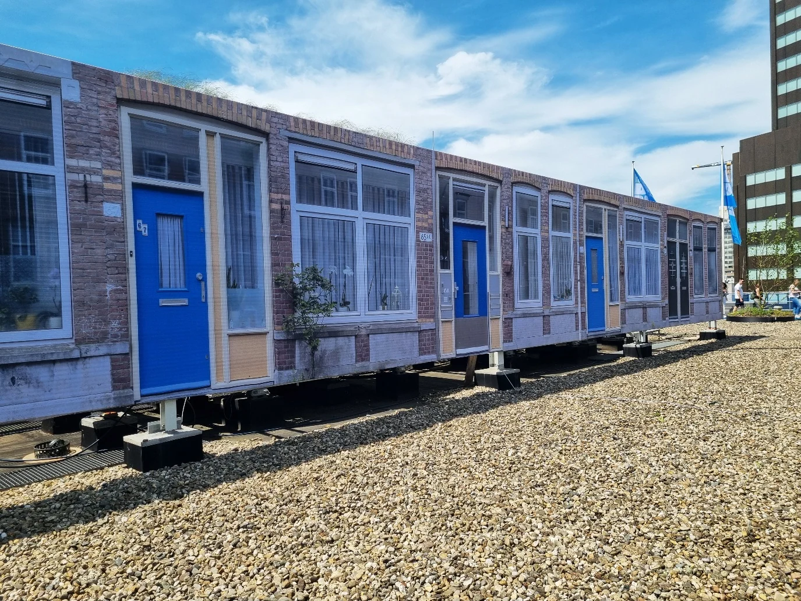
WINDOW TO THE RIVER From here, you can see the water: you have a so-called window to the river. We find that important in Rotterdam. In 1946, a plan was already made for the reconstruction. Here it stated how the new city should be. It is often said that the 'window to the river' was an important starting point. From Coolsingel, you should be able to look freely at the water. Research by Platform Wederopbouw shows that this is partly a myth. The Basic Building Plan is not literally anywhere. And yet we long for it. Rotterdamse Dakendagen hopes that Rotterdammers will always be able to stand on this roof in the future, to make collective use of our window.
한글 번역 (강으로 향하는 창문): 여기서 당신은 강을 내려다본다: 이른바 '강으로 향하는 창문'이 있다. 우리는 이것을 로테르담에서 중요하게 생각한다. 1946년에 이미 재건축 계획이 세워졌다. 여기에는 새로운 도시가 어떻게 되어야 하는지가 명시되어 있었다. '강으로 향하는 창문'이 중요한 출발점이었다고 흔히들 말한다. 쿨싱엘에서 자유롭게 강을 바라볼 수 있어야 한다는 것이다. 플랫폼 웨더로프바우(Platform Wederopbouw)의 연구에 따르면 이는 부분적으로는 신화다. 기본 건축 계획에는 문자 그대로 어디에도 나와 있지 않다. 그럼에도 불구하고 우리는 그것을 갈망한다. 로테르담 루프탑 데이즈는 미래에 로테르담 시민들이 항상 이 옥상에 서서 우리의 창문을 함께 사용할 수 있기를 바란다.
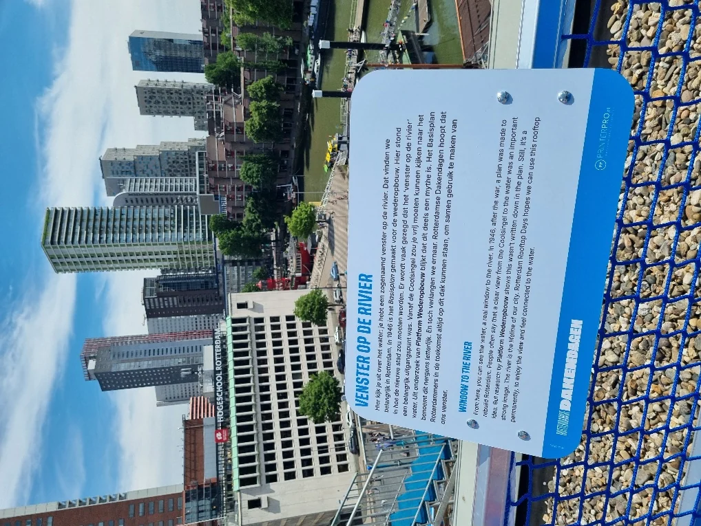
NOT ALL SOLAR PANELS ARE THE SAME
To equip all those roofs with solar panels, the government has launched a sustainable energy transition. They are becoming better and better, but are still far from perfect. For years, research has been conducted into new technologies. Such as solar panels that regulate the temperature in buildings, or improve air quality, and even generate energy when it's not sunny. The rooftop days and Rotterdam are working together to test and install this.
한글 번역(모든 태양광 패널이 같지는 않다)
모든 옥상에 태양광 패널을 설치하기 위해 정부는 지속 가능한 에너지 전환을 시작했다. 태양광 패널은 점점 더 좋아지고 있지만 아직 완벽과는 거리가 멀다. 건물 내부 온도를 조절하거나 공기 질을 개선하고, 심지어 햇볕이 들지 않을 때도 에너지를 생산할 수 있는 태양광 패널과 같은 새로운 기술에 대한 연구가 수년 동안 진행되어 왔다. 옥상 축제와 로테르담은 이를 시험하고 설치하기 위해 협력하고 있다.
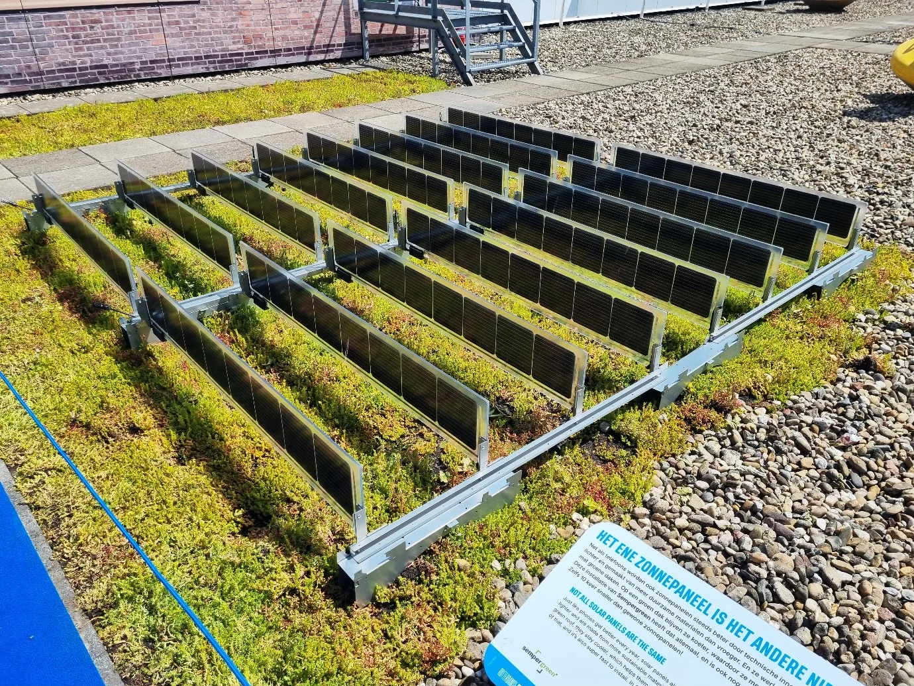
마리티엠 뮤지엄 옥상은 단순한 슬라이드 체험을 넘어, 로테르담의 과거와 현재, 그리고 미래를 조망할 수 있는 복합적인 학습과 경험의 장이었다. 무엇보다 도시의 지속 가능한 발전과 새로운 공간 활용에 대한 깊이 있는 통찰을 얻을 수 있었던 의미 있는 시간이었다. 이렇게 첫 날의 로테르담 루프탑 데이즈는 도시의 숨겨진 잠재력을 발견하고, 미래 도시 공간에 대한 아이디어를 공유하는 흥미로운 축제임을 확인시켜주며, 이튿날에 있을 행사에도 기대감을 불어넣었다.
이 글의 판본과 수록 정보 ＋
집필 폴더의 자료; 실제 작성자·집필 기여 미확정
원고·초안의 표현을 보존해 수록한 온라인 편집본입니다.
- 수록 자료
- 로테르담 루프탑 데이즈_도시의 옥상을 공공 디자인으로 재해석하다(1편).docx
- 자료의 날짜 단서
- 기록 없음 · 실제 발표일과 다를 수 있습니다.
- 관련 파일
- 1개 / 서로 다른 본문 1종